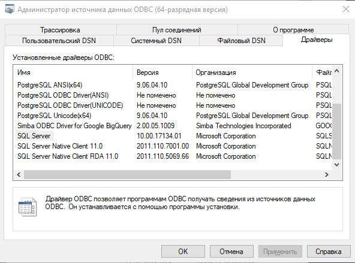
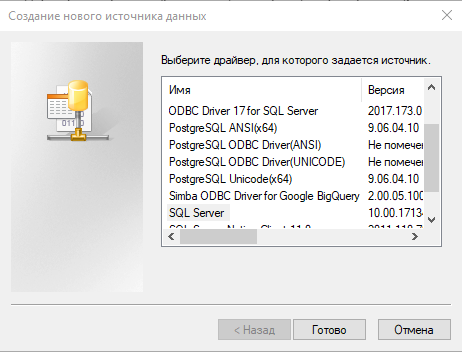
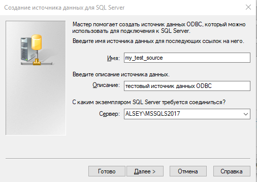

Взаимодействие R с базами данных на примере Microsoft SQL Server и других СУБД
Поскольку львиная доля бизнес информации храниться в базах данных. На каком бы языке программирования вы не писали, вам придётся производить различные действия с ними.
В этой статье я расскажу о двух интерфейса для работы с базами данных в R. Большая часть примеров демонстрируют работу с Microsoft SQL Server, тем не менее все примеры кода будут работать и с другими базами данных, такими как: MySQL, PostgreSQL, SQLite, ClickHouse, Google BigQuery и др.

Содержание
Если вы интересуетесь анализом данных, и в частности языком R, возможно вам будут интересны мои telegram и youtube каналы. Большая часть контента которых посвящена языку R.
Впервые статья была опубликована на Хабре
- Требуемое программное обеспечение
- Пакет DBI
- Список основных функций DBI
- Подключение к базам данных
- Создание таблиц и запись в базу данных
- Чтение данных из СУБД
- Манипулирование данными в СУБД (DML)
- Транзакции в СУБД
- Пакет RODBC
- Основные функции пакета RODBC
- Пример работы с RODBC
- Транзакционность
- Заключение
Требуемое программное обеспечение
Для того, что бы повторить все описанные в статье примеры работы с СУБД вам потребуется перечисленное ниже, бесплатное программное обеспечение:
- Язык R;
- Среда разработки RStudio;
- Система Управления Базами Данных, на выбор:
3.1. Microsoft SQL Server
3.2. MySQL
3.3. PostgreSQL
Пакет DBI
Пакет DBI является наиболее популярным и удобным способом взаимодействия с базами данных в R.
DBI предоставляет вам набор функций, с помощью которых вы можете управлять базами данных. Но для подключения к базам данных требуется установка дополнительных пакетов, которые являются драйверами к различным системам управления базами данных (СУБД).
Список основных функций DBI
dbConnect— подключение к базе данных;dbWriteTable— запись таблицы в базу данных;dbReadTable— загрузка таблицы из базы данных;dbGetQuery— загрузка результата выполнения запроса;dbSendQuery— отправка запроса к базе данных;dbFetch— извлечение элементов из набора результатов;dbExecute— выполнение запросов на обновление / удаление / вставку данных в таблицы;dbGetInfo— запрос информацию о результате запроса или подключении;dbListFields— запрос списка полей таблицы;dbListTables— запрос списка таблиц базы данных;dbExistsTable— проверка наличия таблицы в базе данных;dbRemoveTable— удаление таблицы из базы данных;dbDisconnect— разрыв отсоединения с базы данных.
Подключение к базам данных
Для взаимодействия с базами данных предварительно к ним необходимо подключиться. В зависимости от СУБД с которой вы планируете работать вам потребуется дополнительный пакет, ниже перечень наиболее часто используемых.
odbc— Драйвер для подключения через ODBC интерфейс;RSQLite— Драйвер к SQLite;RMySQL/RMariaDB— Драйвер к СУБД MySQL и MariaDB;RPostgreSQL— Драйвер к PosrtgreSQL;bigrquery— Драйвер к Google BigQuery;RClickhouse/clickhouse— Драйвер к ClickHouse;RMSSQL— Драйвер к Microsoft SQL Server (MS SQL), на момент написания статьи присутствует только на GitHub.
Пакет DBI поставляется с базовой комплектацией R, но пакеты, которые являются драйверами к базам данных необходимо устанавливать с помощью команды install.packages("название драйвера").
Для установки пакетов с GitHub вам также понадобится дополнительный пакет — devtools. Например пакет RMSSQL на данный момент не опубликован в основном репозитории R пакетов, для его установки воспользуйтесь следующим кодом:
install.packages("devtools")
devtools::install_github("bescoto/RMSSQL")
Пример подключения к Microsoft SQL Server с помощью пакета odbc
Перед использованием любого пакета в R сессии его предварительно необходимо подключить с помощью функции library("название пакета").
Я неспроста выбрал Microsoft SQL Server в качестве основной СУБД на которой будет приведена большая часть примеров этой статьи. Дело в том, что это достаточно популярная база данных, но при этом она до сих пор не имеет драйвера для подключения из R опубликованного на CRAN.
Но к счастью SQL Server, как и практически любая другая база имеет ODBC (англ. Open Database Connectivity) интерфейс для подключения. Для подключения к СУБД через ODBC интерфейс в R есть ряд пакетов. Первым мы рассмотрим подключение через пакет odbc.
Простое подключение к БД через odbc интерфейс
В функцию dbConnect() вам необходимо первым аргументом drv передать функцию, которая является драйвером для подключения к СУБД (odbc()). Такие функции обычно называются также, как и СУБД, и поставляются с пакетами которые являются драйверами для DBI.
Далее необходимо перечислить параметры подключения. Для подключения к MS SQL через ODBC необходимо задать следующие параметры:
- Driver — Название ODBC драйвера;
- Server — IP адрес SQL сервера;
- Database — Название базы данных к которой необходимо подключиться;
- UID — Имя пользователя базы данных;
- PWD — Пароль;
- Port — Порт для подключения, у SQL Server по умолчанию порт 1433.
ODBC драйвер для подключения к Microsoft SQL Server включен в комплектацию Windows, но он может иметь и другое название. Посмотреть список установленных драйверов можно в Администраторе источника данных ODBC. Запустить администратор источника данных в Windows 10 можно по следующему пути:
- 32-разрядной версии:
%systemdrive%\Windows\SysWoW64\Odbcad32.exe - 64-разрядной версии:
%systemdrive%\Windows\System32\Odbcad32.exe

Получить список всех установленных на вашем ПК драйверов также можно с помощью функции odbcListDrivers().
name attribute value
<chr> <chr> <chr>
1 SQL Server APILevel 2
2 SQL Server ConnectFunctions YYY
3 SQL Server CPTimeout 60
4 SQL Server DriverODBCVer 03.50
5 SQL Server FileUsage 0
6 SQL Server SQLLevel 1
7 SQL Server UsageCount 1
8 MySQL ODBC 5.3 ANSI Driver UsageCount 1
9 MySQL ODBC 5.3 Unicode Driver UsageCount 1
10 Simba ODBC Driver for Google BigQuery Description Simba ODBC Driver for Google BigQuery2.0
# ... with 50 more rows
Скачать ODBC драйвера для других СУБД можно по следующим ссылкам:
Для различных СУБД название параметров для подключения могут быть другими, например:
- PostgreSQL / MySQL / MariaDB — user, password, host, port, dbname;
- GoogleBigQuery — project, dataset;
- ClickHouse — user, password, db, port, host;
С помощью администратора источника данных ODBC вы можете запустить мастер для создания ODBC источника данных. Для этого достаточно открыть администратор, перейти на вкладку “Пользовательский DSN” и нажать кнопку “Добавить…”.

При создании источника данных используя администратор вы присваиваете ему имя, DSN (Data Source Name).

В примере выше мы создали источник данных с DSN “my_test_source”. Теперь мы можем использовать этот источник для подключения к Microsoft SQL Server, и не указывать в коде остальные параметры подключения.
Подключение к БД через odbc интерфейс с использованием DSN
Посмотреть имена всех созданных на вашем ПК источников данных ODBC можно с помощью функции odbcListDataSources().
name description
<chr> <chr>
1 BQ Simba ODBC Driver for Google BigQuery
2 BQ_main Simba ODBC Driver for Google BigQuery
3 BQ ODBC Simba ODBC Driver for Google BigQuery
4 OLX Simba ODBC Driver for Google BigQuery
5 Multicharts Simba ODBC Driver for Google BigQuery
6 PostgreSQL35W PostgreSQL Unicode(x64)
7 hillel_bq Simba ODBC Driver for Google BigQuery
8 blog_bq Simba ODBC Driver for Google BigQuery
9 MyClientMSSQL SQL Server
10 local_mssql SQL Server
11 MSSQL_localhost SQL Server
12 my_test_source SQL Server
13 Google BigQuery Simba ODBC Driver for Google BigQuery
Пример подключения к Microsoft SQL Server с помощью пакета RMSSQL
RMSSQL не опубликован на CRAN, поэтому установить его можно с GitHub с помощью пакета devtools.
install.packages("devtools")
devtools::install_github("bescoto/RMSSQL")
Пример подключения с помощью DBI драйвера RMSSQL
В большинстве случаев, используя для работы с базами данных пакет DBI, вы будете подключаться именно таким способом. Т.е. устанавливать один из требуемых пакетов — драйверов, передавая в качестве значения аргумента drv функции dbConnect, функцию — драйвер для подключения к нужной вам СУБД.
Пример подключения к MySQL, PostgreSQL, SQLite и BigQuery
Как скрыть пароли от базы данных в R скриптах
Выше я привёл несколько примеров которые можно использовать для подключения к любой базе данных но в них есть один минус, в таком виде все доступы к базам данных, включая пароли, хранятся в виде текста в самих скриптах.
Если все ваши скрипты развёрнуты и запускаются исключительно локально на вашем ПК, и он при этом защищён паролем, то скорее всего никакой проблемы в этом не будет. Но если вы совместно с кем то работаете на одном сервере то хранение паролей от баз данных в тексте ваших скриптов не лучшее решение.
В любой операционной системе есть утилита для управления учётными данными. Например, в Windows это диспетчер учетных данных (Credential Manager). Добавить в это хранилище пароль который вы используете для подключения к базе данных можно через пакет keyring. Пакет кроссплатформенный и приведённый пример будет работать в любой операционной системе, как минимум на Windows, MacOS и Linux.
# install.packages("keyring")
# подключаем пакет
library(keyring)
library(RMSSQL)
# создаём ключ
key_set_with_value(service = "mssql",
username = "my_username",
password = "my_password")
# подключение через RMSSQL
con <- dbConnect(MSSQLServer(),
host = 'localhost',
user = 'my_username',
password = key_get("mssql", "my_username"),
dbname = "mybase")
Т.е. с помощью функции key_set_with_value() вы добавляете пароль в хранилище учётных данных, а с помощью key_get() запрашиваете его, при этом запросить пароль может только тот пользователь который добавил его в хранилище. С помощью keyring можно хранить пароли не только от баз данных, но и от любых сервисов, а так же авторизационные токены при работе с API.
Создание таблиц и запись в базу данных
Запись в базу данных осуществляется функцией dbWriteTable().
Аргументы функции dbWriteTable():
Жирным шрифтом выделены обязательные аргументы, курсивом — не обязательные
- conn — объект подключения к СУБД, созданный с помощью функции
dbConnect; - name — название таблицы в СУБД, в которую будут записаны данные;
- value — таблица (объект класса data.frame / data.table / tibble_frame) в R, данные из которого будут записаны в СУБД;
- row.names — Добавляет в таблицу столбец row_names, с номерами строк, по умолчанию имеет значение FALSE.
- overwrite — Перезаписывать таблицу, если таблица с именем указанным в аргументе name уже присутвует в СУБД, по умолчанию имеет значение FALSE;
- append — Дописывать данные, если таблица с именем указанным в аргументе name уже присутвует в СУБД, по умолчанию имеет значение FALSE;
- field.types — Принимает на вход именованный вектор, и задаёт тип данных в каждом поле при записи в СУБД, по умолчанию имеет значение NULL;
- temporary — Позволяет создавать временные таблицы в СУБД, которые будут доступны до момента разрыва соединения с базой, по умолчанию имеет значение FALSE.
Пример записи данных в СУБД через DBI
Для просмотра таблиц в базе данных служит функция dbListTables(), для удаления таблиц dbRemoveTable()
Пример запроса списка таблиц и удаления таблицы из СУБД
Чтение данных из СУБД
С помощью DBI вы можете запрашивать либо таблицы целиком, либо результат выполнения вашего SQL запроса. Для выполнения этих операций используются функции dbReadTable() и dbGetQuery().
Пример запроса таблицы iris из СУБД
Пример загрузки результата выполнения SQL из СУБД
Манипулирование данными в СУБД (DML)
Рассмотренная выше функция dbGetQuery() используется исключительно для запросов на выборку данных (SELECT).
Для операций манипуляций с данными, таких как UPDATE, INSERT, DELETE, в DBI существует функция dbExecute().
Пример кода для манипуляции данными в СУБД
Транзакции в СУБД
Транзакция это последовательное выполнение операций чтения и записи. Окончанием транзакции может быть либо сохранение изменений (фиксация, commit) либо отмена изменений (откат, rollback). Применительно к БД транзакция это нескольких запросов, которые трактуются как единый запрос.
Цитата из статьи “Транзакции и механизмы их контроля”
Транзакция инкапсулирует несколько операторов SQL в элементарную единицу. В DBI начало транзакции инициируется с помощью dbBegin() и далее либо подтверждается с помощью dbCommit(), либо отменяется с помощью dbRollback(). В любом случае СУБД гарантирует, что: либо все, либо ни одно из утверждений не будут применены к данным.
Для примера, давайте в ходе транзакции добавим в таблицу iris 51 строку, далее изменим значение Sepal.Width в 5 строке, и удалим 43 строку из таблицы.
Пример кода проведения транзакции
Пример кода отмены транзакции
Пакет RODBC
Пакет RODBC предоставляет автономный интерфейс для подключения и работы с СУБД через ODBC интерфейс.
RODBC не совместим с DBI, т.е. вы не можете использовать объект подключения созданный с помощью RODBC в функциях предоставляемых пакетом DBI.
Основные функции пакета RODBC
odbcConnect— Подключение к СУБД через DSN;odbcDriverConnect— Подключение к базе через строку подключения;sqlQuery— Отправка запроса в СУБД, и получение результата его выполнения. Поддерживает запросы любого типа: SELECT, UPDATE, INSERT, DELETE.sqlFetch— Получить целиком таблицу из СУБД;sqlTables— Получить список таблиц в базе.sqlSave— Создание новой таблицы в базе данных, или добавление новых данных в уже существующую таблицу;sqlUpdate— Обновление данных в таблице которая уже существует в СУБД;sqlDrop— Удаление таблицы в СУБД;odbcClose— Завершение соединения с СУБД.
Пример работы с RODBC
С моей точки зрения RODBC менее функционален чем DBI, но в нём есть все необходимые функции для работы с СУБД.
Пример взаимодействия с СУБД через RODBC
Транзакционность
По умолчанию транзакционность в RODBC выключена. Управление транзакциями осуществляется двумя функциями.
odbcSetAutoCommit— Переключение между обычным и транзакционным режимом работы с СУБД;odbcEndTran— Подтверждение или отмена транзакции.
Включение и отключение транзакционного режима осуществляется функцией odbcSetAutoCommit с помощью аргумента autoCommit.
Примре работы в транзакционном режиме в RODBC
Заключение
Два описанных в статье метода работы с базами данных на языке R, DBI и RODBC, достаточно универсальны, и будут работать практически с любой СУБД.
Единственная разница в работе между различными СУБД заключается в процессе подключения. Для большинства популярных СУБД существуют отдельные пакеты которые являются драйверами. Для остальных СУБД необходимо настраивать подключение через ODBC интерфейс используя пакеты odbc или RODBC. Все остальные манипуляции, вне зависимости от выбранной вами СУБД, будут неизменны. Исключением является отправка SQL запросов, в зависимости от SQL диалекта который поддерживается СУБД с которой вы работаете.
P.S.
Если вы дочитали стататью, то наверняка интересуетесь языком R, в таком случае думаю вам будет интересен мой телеграм и youtube каналы, большая часть контента которых посвящена языку R. Подписывайтесь.